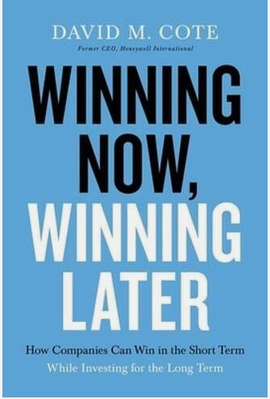

Winning Now Winning Later by David M. Cote
Price $20
Business leaders often take actions that prop up earnings in the short term, but compromise their companies’ long-term health. David Cote, the much-respected former leader of Honeywell International and one of the most successful CEOs of his generation, shares a simple, paradigm-shifting method of achieving both short- and long-term goals. Short-termism is rampant among executives and managers today, causing many companies to underperform and even go out of business. With competition intense and investors demanding strong quarterly gains now, leaders all too often feel obliged to sacrifice the investments so necessary for long-term growth. Dave Cote is intimately familiar with this problem. Upon becoming Honeywell’s CEO in 2002, he encountered an organization on the verge of failure, thanks to years of untrammeled short-termism. To turn the company around, he and his team adopted a series of bold operational reforms and counterintuitive leadership practices that enabled them to “do two conflicting things at the same time”–pursue strong short- and long-term results. The outcome was phenomenal. Under Cote’s leadership, Honeywell’s market cap grew from $20 billion to $120 billion, delivering returns of about 800%, two and a half times greater than the S&P 500. Offering ten essential principles for winning both today and tomorrow, this book will help readers to Spot practices that seem attractive in the short term but will cost the company in the futureDetermine where and how to invest in growth for maximum impactSustain both short-term performance and long-term investments even in challenging times, such as during recessions and leadership transitionsFeel inspired to stand up to investors and other managers who are solely focused on either short- or long-term objectivesStep back, think independently, and foster independent thinking among others around them. Presenting a comprehensive solution to a perennial problem, Winning Now, Winning Later is a go-to guide for leaders everywhere who seek to finally transcend short-termism’s daily grind and leave an enduring legacy of success
First Minute by Chris Fennin
Price $19.9

Get people's attention and get your message across at work. Learn the simplest way to improve your business communication skills. There is no fluff and no vague advice, just practical step-by-step methods you can start using today.This multi-award-winning book teaches specific methods for having short, clear business conversations, emails, meetings, interviews, and more. Check out the reviews to hear from the real people this book has helped. Communication should be clear and concise, and we should get to the point quickly. The problem is we don’t always know how to do this. What does it mean to be concise? How can a complex topic be summarized in just a few lines?This award-winning book is a step-by-step guide for clear, concise communication in everyday work conversations. Being concise is not about trying to condense all the information into sixty seconds. It is about having clear intent, talking about one topic at a time, and focusing on solutions instead of dwelling on problems.Throughout this book you’ll discover how · Have shorter, better work conversations and meetings· Get to the point faster without rambling or going off on tangents· Lead your audience toward the solution you need· Apply one technique to almost every discussion, email, presentation and interview with great results This book is a result of more than 20,000 conversations in both business and technical jobs. Chris Fenning has trained individuals and teams around the world in these techniques. He has worked with organizations from start-ups to Fortune 50 and FTSE 100 companies. These methods work for them all.Having clearer communication is easier than you might expect, and it all starts with the first minute.
Bargaining for Advantage Negotiation Strategies for Reasonable People by G. Richrad Shell
Price $18.9

"A must read for everyone seeking to master negotiation. This newly updated classic just got even better."--Robert Cialdini, bestselling author of Influence and Pre-Suasion As director of the world-renowned Wharton Executive Negotiation Workshop, Professor G. Richard Shell has taught thousands of business leaders, lawyers, administrators, and other professionals how to survive and thrive in the sometimes rough-and-tumble world of negotiation. In the third edition of this internationally acclaimed book, he brings to life his systematic, step-by-step approach, built around negotiating effectively as who you are, not who you think you need to be. Shell combines lively stories about world-class negotiators from J. P. Morgan to Mahatma Gandhi with proven bargaining advice based on the latest research into negotiation and neuroscience. This updated edition includes : This updated edition · An easy-to-take "Negotiation I.Q." test that reveals your unique strengths as a negotiator · A brand new chapter on reliable moves to use when you are short on bargaining power or stuck at an impasse · Insights on how to succeed when you negotiate online · Research on how gender and cultural differences can derail negotiations, and advice for putting relationships back on track